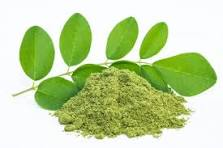

Moringa Smoothie
Serves: 2 • Prep time: 5 mins
Ingredients
- 1 banana
- 1 tsp organic moringa powder
- 1 cup almond milk
- 1 tsp honey
Method
- Add all ingredients to blender.
- Blend until smooth.
- Pour into glasses and enjoy chilled.
Tip: Use frozen banana for extra creaminess.

Moringa Herbal Tea
Serves: 1 • Prep time: 3 mins
Ingredients
- 1 tsp moringa powder
- 1 cup hot water
- ½ lemon (optional)
- Honey to taste
Method
- Mix moringa powder in hot water.
- Add lemon juice and honey.
- Stir well and serve warm.
Tip: Add ginger slices for extra flavor and digestion benefits.

Moringa Energy Balls
Makes: 10 balls • Prep time: 15 mins
Ingredients
- 1 cup dates (pitted)
- ½ cup oats
- ¼ cup coconut flakes
- 1 tsp moringa powder
Method
- Blend all ingredients until sticky.
- Roll into bite-sized balls.
- Refrigerate for 30 mins before serving.
Tip: Coat balls with cocoa powder or sesame seeds for variation.
Moringa Pancakes
Serves: 4 • Prep time: 20 mins
Ingredients
- 1 cup whole wheat flour
- 1 tsp baking powder
- 1 tbsp moringa powder
- 1 egg
- 1 cup milk
- 1 tbsp honey
Method
- Mix dry ingredients in a bowl.
- Whisk egg, milk, and honey in another bowl.
- Combine mixtures and cook pancakes on a greased pan.
Tip: Serve with fresh fruits or drizzle of maple syrup for added taste.

Moringa Vegetable Soup
Serves: 3 • Prep time: 25 mins
Ingredients
- 1 tbsp olive oil
- 1 onion, chopped
- 1 carrot, diced
- 2 cups vegetable broth
- 1 tsp moringa powder
- Salt & pepper to taste
Method
- Sauté onion and carrot in olive oil.
- Add broth and bring to a boil.
- Stir in moringa powder and season with salt & pepper.
- Simmer for 10 mins before serving.
Tip: Add sweet corn or spinach for extra nutrition.